MGIMO×AI CHALLENGE · кейс «Цифровой деканат будущего»
Описание процесса создания
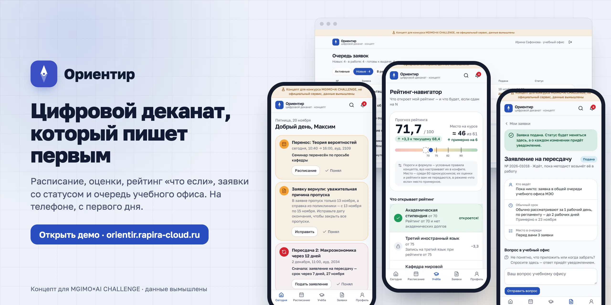
| Что | Ссылка | Примечание |
|---|---|---|
| Живое демо | orientir.rapira-cloud.ru | Работает до 28.11.2026. Вход одной кнопкой «Войти» или по логину и паролю |
| Демо-видео | orientir.rapira-cloud.ru/video/demo.mp4 | 2:42, без звука, с титрами |
| Исходный код | github.com/DverkuOff/digital-dean-concept | README, документы процесса, файлы для ИИ-агентов |
| Сценарий показа | pitch/demo-script.md в репозитории |
Что смотреть и в каком порядке, проверка безопасности |
Пароль у всех аккаунтов: demo2026. На странице входа у
каждого персонажа есть кнопки «Войти», «копия 2» и «копия 3».
| Персонаж | Логины | Что посмотреть |
|---|---|---|
| Максим Орлов, 2 курс | orlov, orlov2, orlov3 |
Долг по макроэкономике и режим пересдачи, перенос пары, заявку вернули с причиной |
| Анна Соколова, 2 курс | sokolova, sokolova2,
sokolova3 |
Отличница без долгов: рейтинг 87,5 и пороги, готовая справка |
| Методист учебного офиса | metodist, metodist2,
metodist3 |
Очередь заявок: взять в работу, вернуть с причиной, готово |
Копии нужны, чтобы эксперты не мешали друг другу. Действия под
orlov2 не меняют данные orlov и
orlov3. Очередь методиста общая: это одна служба.
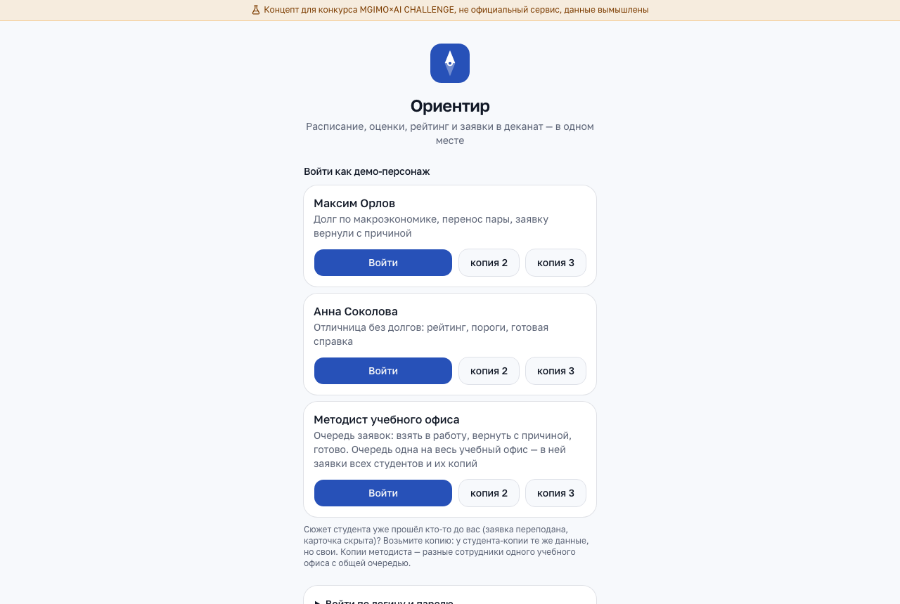
Кейс описывает раздробленность учебной жизни: расписание на сайте, оценки в отдельной системе, справки через очередь, объявления в чатах и на почте (бриф, §2).
Чтобы понять, какие задачи студента за этим стоят, до разработки
провели исследование открытых источников по четырём направлениям:
прошлые победители похожих конкурсов, конкуренты (14 личных кабинетов и
студенческих приложений), предметная область и технологии. Результаты
лежат в docs/research/01–04.
Открытых российских данных о недовольстве учебными офисами исследование не нашло. Зарубежные опросы дают ориентир: по Unit4 (2016, 2000 студентов) треть студентов разочарованы системами администрирования, по Gravyty (2026, США) 76% хотят решать административные вопросы без звонков и визитов к сотрудникам.
Опрос однокурсников не проводился. В плане
(docs/plan.md) на 20.11 стоял короткий опрос 2–3 студентов
о правилах рейтинга, и он остался невыполненным.
Поэтому выбор разделов опирается на исследование открытых источников, перечисленное ниже. Правила рейтинга (формула, пороги, число попыток) вынесены в конфиг и на экране помечены как условные: официальное положение о балльно-рейтинговой системе МГИМО прочитать не удалось, сайт вуза закрыт проверкой от ботов.
| Находка исследования | Источник в репозитории | Что сделали в кабинете |
|---|---|---|
| Главная боль не в нехватке функций, а в раздробленности и плохой находимости. Айтрекинг ЛК РАНХиГС (2026): повторный вход в разные системы, раздел «Заказ справки» новички ищут почти вдвое дольше старожилов, главную страницу игнорируют | 02-competitors.md |
Один кабинет с нижним таббаром; поиск по своим данным (Ctrl+K); главный экран «Сегодня» собирает важное за день |
| Уведомления — самая частая жалоба: у Canvas Student 54% отзывов об уведомлениях негативные | 02-competitors.md |
«Сегодня»: 3–5 карточек по правилам, дубли схлопываются, кнопка «Понял» убирает карточку |
| У найденных ЛК (РУДН, РАНХиГС) у заявки виден только статус. Ответственного и срок не показывает никто | 02-competitors.md, «Пробелы» |
Прозрачность заявки: кто ведёт, обычный срок, место в очереди, вопрос в учебный офис внутри заявки |
| По отзывам студентов МГИМО, учёба строится вокруг 100-балльного рейтинга: по нему распределяют кафедры и третий язык. Во всех найденных ЛК рейтинг виден только постфактум | 03-domain.md, 02-competitors.md |
Рейтинг-навигатор «что если» и режим пересдачи, замкнутый на заявление в учебный офис |
| Самая массовая операция деканата — не справка об обучении, а подтверждение пропуска по уважительной причине (Центр «Студент» ВШЭ: 81 000+ заявок за два года) | 03-domain.md |
Шесть типов заявок: справка об обучении, справка для военкомата, уважительная причина пропуска, выписка оценок, заявление на пересдачу, консультация перед пересдачей |
| Официальное «МГИМО.Расписание» критикуют за «бесконечную загрузку» | 02-competitors.md |
Скелетоны загрузки; «Сегодня», «Расписание» и «Учёба» открываются без сети |
Обязательное ядро брифа (вход и профиль, расписание, успеваемость, заявки, уведомления) взяли целиком: без него работа считается неполной.
Идеи поверх ядра генерировали три независимых ИИ-агента с разных
углов: «боль и данные», «ниша», «вау-демо». Получилось 15 идей
(docs/ideas/ideas-*.md). Отдельный агент в роли жюри
сгруппировал дубли, оценил кластеры по четырём критериям брифа и двум
барьерам (выполнимость за оставшиеся дни, сила демо) и дал рекомендацию
(docs/ideas/critique.md).
| Решение | Что именно | Почему |
|---|---|---|
| Взяли в центр | Рейтинг-навигатор «что если» с режимом пересдачи | Отвечает на вопрос «как у меня дела» для студента МГИМО; работает без внешних сервисов; кнопка «Подать заявление» связывает успеваемость с деканатом |
| Взяли | Главный экран «Сегодня» на правилах | Превращает обязательные уведомления в «деканат пишет первым» почти без затрат |
| Взяли урезанно | Очередь методиста одной страницей, без канбана | Делает сценарий брифа «подать заявку → увидеть статус» настоящим: статус меняет человек в соседнем окне |
| Отказались | «Скажи, что случилось» на GigaChat | Внешняя точка отказа на пути демо, не было времени замерить точность |
| Отказались | Справка с QR-кодом | Риск выдать документ за официальный |
| Отказались | Чат-бот, сторис, i18n, push-уведомления | Чат-бот поверх ЛК — самая частая идея в теме; остальное дорого и не нужно для сценария |
Во втором и третьем заходах добавили приёмы, найденные у аналогов: офлайн-режим (жалобы на «МГИМО.Расписание»), подписку на расписание в календарь (HSE App X, Modeus), глобальный поиск (Utah 360, исследование РАНХиГС), заметку к паре («Кампус»), тёмную тему. «Вопрос в учебный офис» появился после замечания независимой проверки: как студенту связаться с деканатом, если вопрос не укладывается в шесть типов заявок.
В таблице только то, что подтверждается файлами репозитория.
| Инструмент | Для чего использован | Где это видно |
|---|---|---|
| Claude Code (CLI), модель Claude Opus 5.5 с контекстом 1M токенов | Основной ИИ-ассистент и среда разработки: отдельной IDE не было, вся работа шла в Claude Code в терминале. Исследование, генерация и отбор идей, план, весь код приложения, спецификации, тесты, README, сборка демо-видео и картинок для README | docs/process/prompts.md, CLAUDE.md, README
«Как работали с ИИ» |
| Подагенты Claude Code | 4 агента исследования, 3 генератора идей, агент-жюри для отбора;
независимая проверка (жюри и технический аудит); тестировщик ПМИ на
проде; ревьюер доступа access-reviewer |
docs/process/prompts.md,
docs/decisions.md, .claude/agents/ |
| Веб-поиск и чтение страниц в ассистенте (WebSearch, WebFetch) | Источники для исследования, проверка, не занята ли идея | docs/research/*, docs/ideas/critique.md,
.claude/settings.json |
| context7 (MCP-сервер) | Актуальная документация библиотек, в том числе Better Auth 1.7 | docs/process/prompts.md |
Документация Next.js из
node_modules/next/dist/docs |
Сверка с API Next.js 16 перед кодом: в нём middleware называется
proxy.ts, в новом шаблоне включён
cacheComponents |
AGENTS.md, docs/process/prompts.md |
| ESLint, TypeScript | Проверка каждой правки ассистента: хук запускает ESLint после каждого изменения файла | .claude/hooks/lint-edited.sh |
| Playwright | 83 сценария в браузере на ширине 360 px, съёмка скриншотов, запись экрана для демо-видео | e2e/, playwright.screens.config.ts,
pitch/demo/scripts/record.mjs |
| Vitest | 69 юнит-тестов: формула рейтинга, правила «Сегодня», валидация, даты, сид | src/lib/**/*.test.ts |
| HyperFrames 0.9.72 (анимация на GSAP) | Монтаж демо-видео с титрами из записей Playwright | pitch/demo/ |
| ffmpeg | Сборка кадров записи в клипы, обложка видео | pitch/demo/scripts/*.mjs |
| shadcn/ui (Radix), Tailwind CSS 4, иконки lucide-react, шрифт Golos Text | Дизайн интерфейса: единый стиль на токенах темы, тёмная тема без переделки экранов | src/components/ui,
.claude/rules/ui.md |
| Next.js 16, React 19, TypeScript, Drizzle ORM, PostgreSQL 17, Better Auth, argon2id, zod | Стек приложения | package.json, AGENTS.md |
| Docker, Caddy, собственный сервер | Хостинг живого демо с HTTPS | deploy/, Dockerfile, README |
| Amvera | Подготовлен альтернативный конфиг деплоя (amvera.yml),
для демо не использовался |
docs/decisions.md |
| GitHub, Dependabot | Репозиторий; два алерта о транзитивных зависимостях закрыты | docs/decisions.md |
Дизайн и тексты интерфейса делал тот же ассистент, прямо в коде, по
правилам .claude/rules/ui.md. Для анимаций и полировки
интерфейса ассистент использовал скиллы Claude Code: emilkowalski/skills
(анимации) и apple-design.
Логотип «Ориентира» (компас в синем квадрате) нарисовал тот же
ассистент кодом, как SVG (src/app/icon.svg); PNG-иконки для
установки на телефон сделаны из него. Обложка README
(media/hero.webp) собрана ассистентом из настоящих
скриншотов прототипа. Генераторы картинок (Kandinsky, Midjourney и т.
п.), v0 и Figma не использовались. Текст брифа перенесён из личного
кабинета копированием, без конвертеров. Изображения в README и в этом
документе построены на настоящих снимках работающего прототипа. Снимки
делает Playwright, рис. 1 снят headless Chrome с живого демо.
Языковая модель внутри самого кабинета не используется, поэтому ключей ИИ в прототипе нет.
| Этап | Дата | Что делал ИИ | Результат |
|---|---|---|---|
| Исследование | 11.11 | 4 подагента: прошлые победители, конкуренты, предметная область, технологии | docs/research/01–04 |
| Идеи | 11.11 | 3 генератора с разных углов, 15 идей | docs/ideas/ideas-*.md |
| Отбор | 11.11 | Агент-жюри по критериям брифа | docs/ideas/critique.md |
| План | 17.11 | Ведущий агент: Must/Should/Won't, порядок урезания, демо-момент одной фразой | docs/plan.md, pitch/demo-script.md |
| Первый заход | 17.11 | Каркас, вход, сид, сквозной путь брифа, очередь методиста, тесты на доступ, рейтинг, «Сегодня», спеки, Docker | Ядро и две главные идеи работают, все сценарии закрыты тестами |
| Второй заход | 17.11 | Алерты зависимостей; офлайн, календарь, прозрачность заявки, поиск, заметка к паре, тёмная тема — каждая фича отдельным коммитом | 6 фич с тестами и записями в журнале |
| Независимая проверка и третий заход | 17.11 | Агенты-проверяющие (жюри и аудитор атак); затем 10 пунктов правок;
прогон access-reviewer |
Закрыты критичная и важные находки, раздел в
docs/decisions.md |
| Деплой и испытания на проде | 20.11 | Деплой на свой сервер; два круга ПМИ субагентом-тестировщиком на живом демо; правки | Живое демо, вид «Месяц», правдоподобный календарь сида |
| Видео и README | 20.11 | Запись сценария в Playwright, монтаж в HyperFrames, README с обложкой и скриншотами | Демо-видео 2:42, README |
Вся история — 54 коммита в репозитории. Каждый коммит — один работающий шаг, после которого сборка и тесты зелёные.
Файлы для ассистента лежат в репозитории и описывают, как работать именно с этим кодом.
| Файл | Назначение |
|---|---|
CLAUDE.md |
Вход для ассистента: где лежат требования, план, спеки и журнал; какие хуки, агенты и команды есть; правила работы. «Готово» значит, что тест или ручной проход зелёный, а не «код написан» |
AGENTS.md |
Правила для любых агентов (Claude Code, Codex, Cursor): карта кода, 12 жёстких правил, проверки перед коммитом, как ставить задачу агенту |
.claude/rules/security.md |
Правила для серверного кода. Подгружаются, когда агент трогает
src/server/** или src/app/** |
.claude/rules/ui.md |
Правила интерфейса: 360 px, токены цвета, пустые состояния, формы, тексты без канцелярита |
.claude/rules/data.md |
Правила сида и миграций: только вымышленные данные, все даты от текущего дня |
.claude/agents/access-reviewer.md |
Субагент-ревьюер: проверяет изменения на доступ к чужим данным, ничего не правит сам, возвращает таблицу находок |
.claude/hooks/lint-edited.sh |
Хук после каждой правки: ESLint по изменённому файлу, ошибки сразу возвращаются ассистенту |
.claude/commands/screens.md,
demo-check.md |
Команды: переснять скриншоты на свежем демо; полная проверка перед показом |
.claude/settings.json |
Разрешения: ассистенту запрещено читать .env, править
оригинал брифа и делать force push |
docs/specs/*.md |
Пять спецификаций: рейтинг, «Сегодня», доступ, модель данных, офлайн. Правило: меняешь поведение — обнови спеку |
docs/decisions.md,
docs/process/prompts.md |
Журнал решений и ошибок ИИ; постановки задач |
Пример правила, которое подгружается при работе с серверным кодом
(.claude/rules/security.md, дословно):
Владелец — в условии запроса:
where(and(eq(t.id, id), eq(t.studentId, me.id))). Нельзя сначала выбрать по id, а потом сравнить владельца в JS.
Сначала эти файлы декларировали больше, чем работало. Независимая
проверка заметила, что CLAUDE.md наполовину состоял из
шаблона, а обещанного хука в .claude/ не было. После этого
CLAUDE.md переписали под репозиторий, а обещания заменили
работающими вещами: хук ESLint проверили на чистом файле (0 ошибок) и на
файле с let вместо const (2 ошибки), добавили
агента access-reviewer и две команды.
Цитаты взяты из docs/process/prompts.md. Постановка 1
там приведена сокращённо, по смыслу; полная версия хранится в истории
сессии.
Что выбрано (не пересматривай): ядро полностью; очередь методиста одной страницей без канбана; центральная фича — рейтинг-навигатор «что если» (100-балльная шкала, пороги с пометкой «условные правила концепта», ползунок «если сдам на N», место на курсе только агрегатом)…
Обязательные требования: IDOR-защита в слое доступа к данным, Server Actions считаем публичными эндпоинтами, чужая заявка → 404, Playwright-тест на это; argon2id; секреты только в .env; только вымышленные данные; плашка «концепт» на каждой странице; сид относительно now(); 360 px…
Состав решён на этапе отбора, поэтому постановка запрещает его пересматривать. Требования брифа записаны как проверяемые условия («→ 404», «Playwright-тест», «360 px»), а не как пожелания.
Результат: за день сквозной путь брифа, очередь методиста, рейтинг-навигатор и «Сегодня», все сценарии закрыты тестами Playwright; спеки и правила для агентов.
Потом фичи по выгоде, каждая отдельным коммитом, после каждой build + unit + e2e (360 px) зелёные: PWA с офлайном для расписания, оценок и «Сегодня» (кэш только для своего пользователя, при выходе очищается); подписка на расписание в календарь по секретному токену с перевыпуском…
Условие безопасности сформулировано вместе с фичей, поэтому агенту не нужно додумывать, где граница доступа.
офлайн для трёх страниц, кэш раздельный по пользователю и стирается при выходе; тест должен доказать, что после выхода без сети персональных данных нет
Тест прошёл с первого раза, поэтому агент проверил его «на поломку»: временно отключил очистку кэша при выходе, и тест упал. Значит, тест действительно ловит утечку.
личная ссылка-подписка, токен случайный, не id; перевыпуск делает старую недействительной; тест: старый или чужой токен → 404
Агент добавил то, чего не было в постановке: в базе хранится только хеш токена, поэтому утечка базы не даёт рабочих ссылок.
Скрипты атак аудитора перенеси в e2e/юнит-тесты как регрессионные (сначала тест падает, потом чинишь). Порядок: 1) закрыть эндпоинты Better Auth, через которые любой меняет пароль демо-аккаунта; 2) копии персонажей и кнопки «Войти как…»; 3) даты сида доживают до 28.11; 4) рейтинги однокурсников не уходят в браузер…
Проверяли агенты, которые не писали код, поэтому их находки не подтверждали гипотезу автора. Требование «сначала падающий тест» показывает, что тест действительно ловит проблему.
Указать: экран или модуль, ссылку на спеку в docs/specs/, критерий готовности (какой тест должен пройти). Новая бизнес-логика — сначала чистая функция с юнит-тестом в
src/lib, потом DAL, потом экран.
| Приём | Как сработал |
|---|---|
| Чистая функция и тест до экрана | Формула рейтинга проверена контрольным примером из сида: Орлов 68,4 → 71,7 при пересдаче на 70 |
| Сверка с актуальной документацией | Без неё код был бы написан под Next.js 14/15, а не под 16 |
| Тест безопасности с контрольным опытом | Студент отправляет настоящую форму методиста, и статус не меняется; та же отправка от методиста срабатывает. Так видно, что отказ дал сервер, а не сломанный запрос |
| Правила по путям | Правило безопасности подгружается только при работе с серверным кодом |
Журнал docs/decisions.md фиксирует каждую ошибку: что
случилось, чем поймали, что изменили. Ниже пять показательных
случаев.
Случай 1. Правила «Сегодня» не учитывали падежи
Что случилось. Код искал название дисциплины в тексте дедлайна как есть. «Макроэкономика» не находилась в «…по макроэкономике», и пересдача появлялась двумя карточками.
Как поймали. Самопроверка сгенерированного кода на реальных строках сида.
Что изменили. Сравнение по основе слова и юнит-тест, чтобы ошибка не вернулась.
Случай 2. Чужая заявка отдала бы статус 200 вместо 404
Что случилось. По плану над страницей заявки лежал скелетон загрузки. При потоковой отрисовке Next.js ответ «не найдено» для чужой заявки уходит со статусом 200. Тест по статусу упал бы, а эксперт с инструментами разработчика увидел бы 200.
Как поймали. Ревью плана тестов по документации Next.js.
Что изменили. Скелетон перенесли на список заявок. Правило «не
ставить скелетон над страницей, которая отвечает 404» записали в
AGENTS.md и спеку доступа.
Случай 3. Точные рейтинги однокурсников уходили в браузер
Что случилось. Страница рейтинга передавала в браузер массив из 61 точного рейтинга. Имён там не было, но лучшего на курсе все знают, поэтому его рейтинг был раскрыт. ИИ спроектировал «агрегат» и сам же проверил его по слабому признаку: тест искал только фамилии.
Как поймали. Независимая проверка, которая не писала этот код.
Что изменили. Место считается на сервере и уходит одним числом;
для «что если» в браузер передаётся только гистограмма по корзинам в 5
баллов; при выборке меньше 10 человек место скрыто. Регрессионный тест
считает в SQL пять лучших рейтингов и проверяет, что их нет на странице:
до правки упал, после проходит. Позже агент access-reviewer
заметил, что крайние корзины с 1–2 людьми всё ещё выдают лидера, и их
стали сливать до трёх человек.
Случай 4. Любой посетитель мог сменить пароль демо-аккаунта
Что случилось. Библиотека входа по умолчанию открывает служебные адреса: смену пароля, смену логина, отзыв сессий. Пароль демо-аккаунтов опубликован, поэтому один запрос ломал вход всему жюри. Тесты это не ловили: они проверяли доступ к данным, а не служебные адреса библиотеки.
Как поймали. Технический аудит: аудитор сменил логин
orlov одним запросом, после чего вход давал ошибку.
Что изменили. Наружу открыты только вход, выход и проверка сессии, остальное отвечает 404. Тест сначала упал, после правки проходит: 9 атак дают 404, логин и имя не изменились. Вывод для процесса: «безопасность по умолчанию» сторонней библиотеки нужно проверять отдельно, по списку её адресов.
Случай 5. Юнит-тест закреплял ошибку
Что случилось. В файле календаря точка с запятой не экранировалась, а юнит-тест проверял именно такой, неправильный результат. Экранирование «съел» скрипт, которым правили код.
Как поймали. Технический аудит.
Что изменили. Исправили код и тест; новый тест сначала упал на старом коде. Правило: правки с обратными слешами делать точечной заменой, а не через скрипт с интерпретацией строки.
Другие случаи из журнала, коротко:
| Ошибка ИИ | Чем поймали |
|---|---|
| Тест гонки кликал двумя браузерами, и второй клик ждал исчезнувшую кнопку: тест проверял таймаут, а не гонку | Проверка теста «на поломку»; тест переписан на две параллельные отправки одной формы |
| Локатор теста совпал со скрытым служебным элементом Next.js с той же ролью | Прогон Playwright |
| Скриншоты снимались после тестов, которые меняют данные, и не показывали главный сюжет | Независимая проверка; отдельный прогон съёмки на свежей базе (раздел 7) |
| Перенос пары ставился на ближайший семинар, и в конце недели на экране «Неделя» переноса не было | Прогон e2e в пятницу; сид гарантирует перенос в текущей неделе |
Общие правила, которые выросли из этих случаев, записаны в
CLAUDE.md: новая находка — сначала тест, который падает,
потом правка; тесты на доступ проверяются «на поломку».
Идея и состав зафиксированы текстом:
docs/ideas/critique.md и docs/plan.md с
«демо-моментом одной фразой». Графических макетов в репозитории нет:
экраны собирались сразу в коде на компонентах shadcn/ui, и первой
визуальной версией стал работающий прототип.
Скриншоты экранов делает сам ассистент через Playwright. Ниже — две неудачные ранние версии из истории git и итоговый экран.
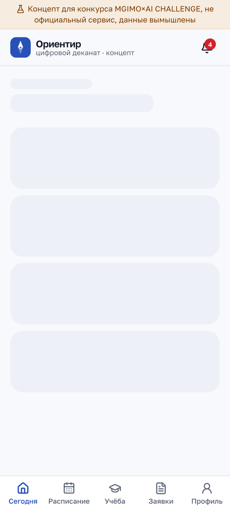
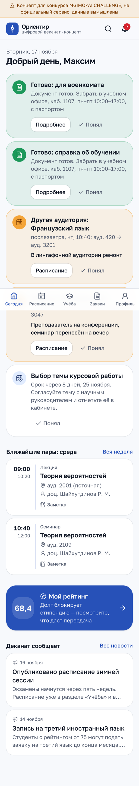
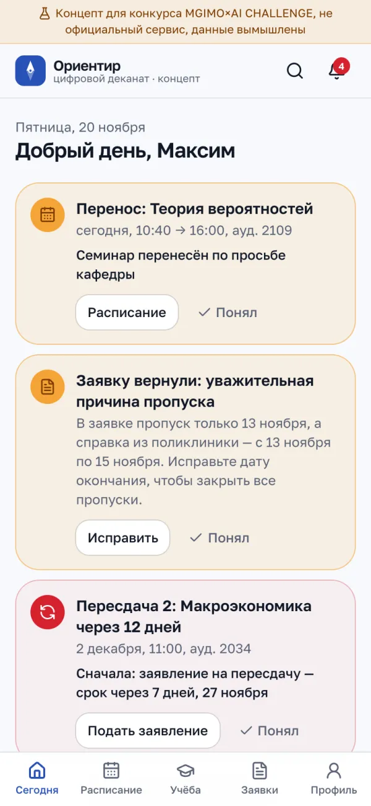
После второго случая съёмку вынесли в отдельный прогон
(npm run screens): база сбрасывается перед съёмкой, экраны
только для чтения снимаются первыми, а экраны, которые меняют данные, —
в конце и под копиями персонажей.
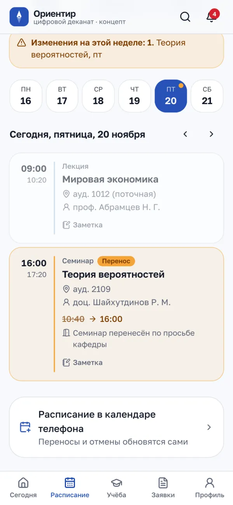
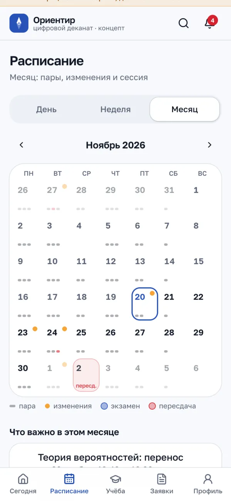
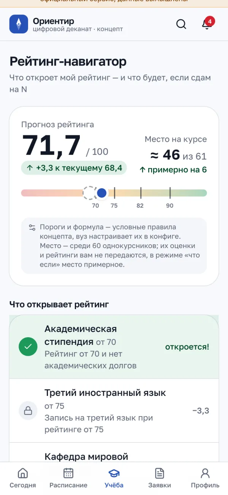
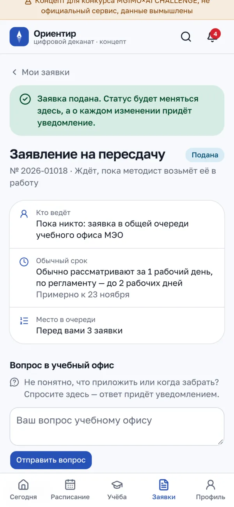
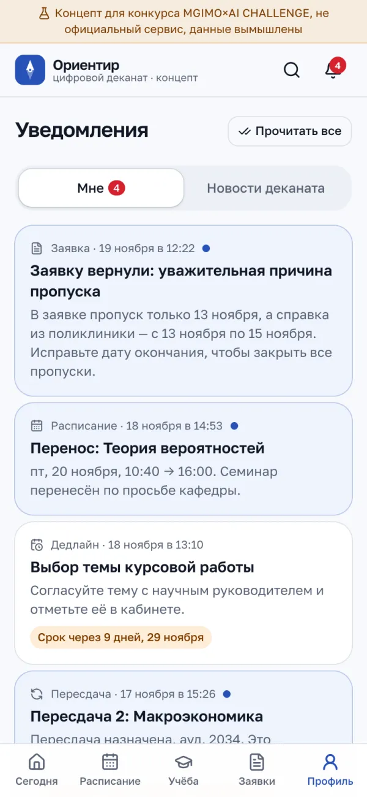
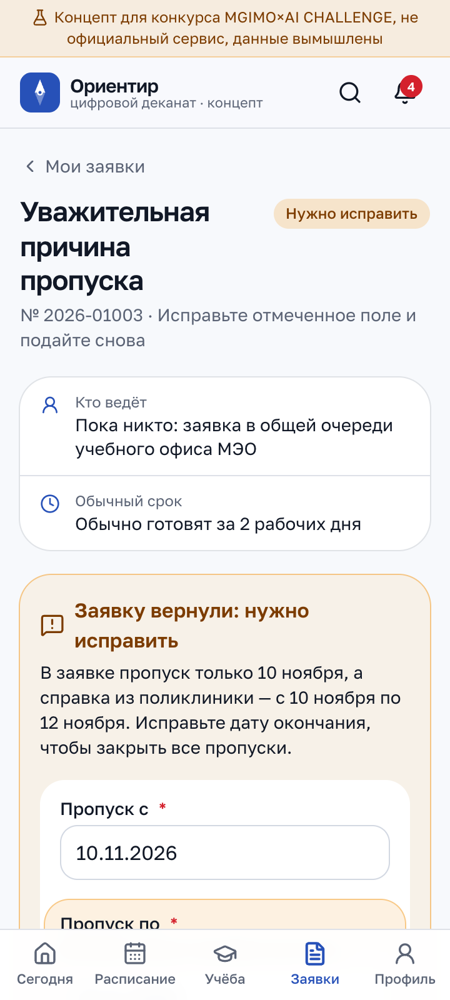
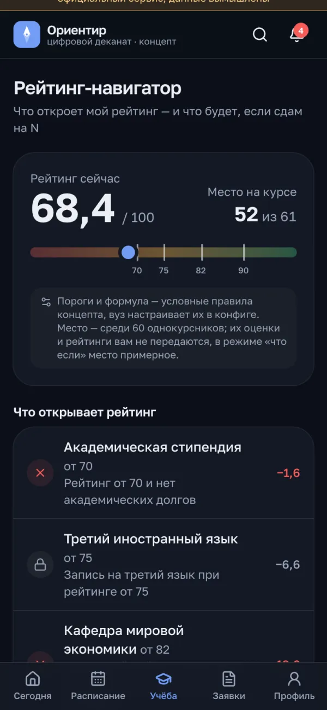
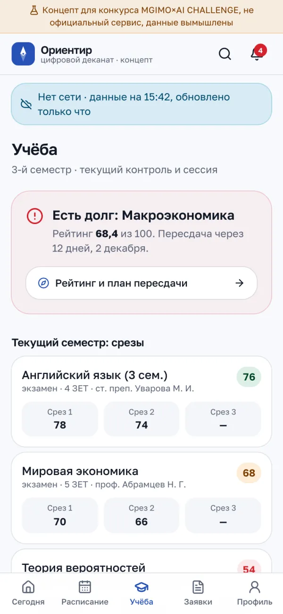
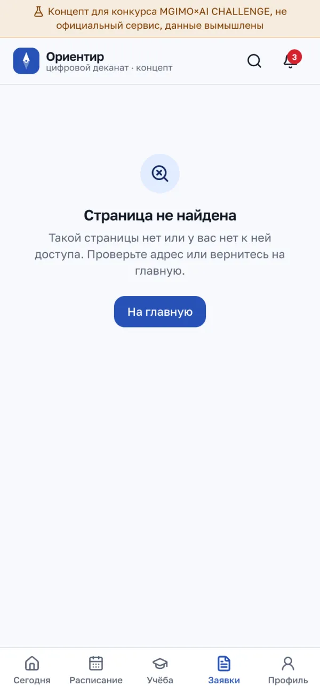
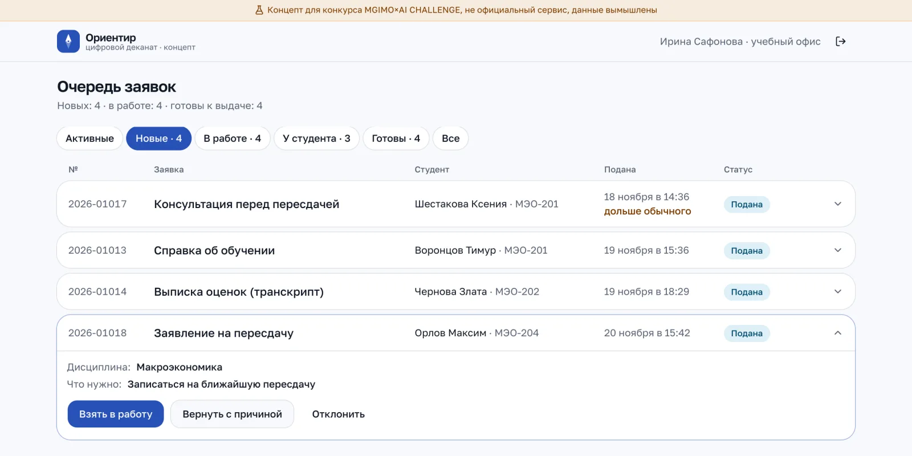
Студент входит по логину и паролю. Регистрации нет: в настоящем вузе аккаунты создаёт деканат, в демо — скрипт с вымышленными данными. Для жюри на странице входа есть кнопки «Войти как…».
Пароль в базе хранится не в открытом виде, а как хеш argon2id с параметрами по рекомендации OWASP. Даже при утечке базы пароль из него не восстановить.
После входа браузер получает случайный токен сессии в cookie,
недоступной скриптам страницы (httpOnly). Сессия хранится в
базе 7 дней. Роль (студент или методист) задаёт сервер, передать её из
браузера нельзя.
Данные лежат в PostgreSQL 17 на собственном сервере, в Docker. Наружу открыт только HTTPS через Caddy, база снаружи недоступна.
Все данные вымышлены. Их создаёт скрипт сида, а даты считаются от текущего дня, поэтому сюжет демо остаётся актуальным до 28 ноября. Медицинские документы к заявкам не загружаются: это персональные данные особой категории.
Офлайн-копия трёх разделов хранится в браузере отдельно для каждого пользователя и стирается при выходе.
| Угроза | Защита простыми словами |
|---|---|
| Открыть чужую заявку, подставив её номер в адрес | Сервер ищет заявку сразу с условием «и она принадлежит тому, кто вошёл». Чужая и несуществующая заявка неотличимы: обе дают «не найдено» (404) |
| Студент открывает кабинет методиста | Роль проверяется на сервере, студент получает 404 |
| Вызвать действие методиста в обход интерфейса | Каждое действие на сервере само проверяет сессию и роль; статусы меняются только по таблице разрешённых переходов |
| Подменить номер студента в форме | Номер студента берётся только из сессии, не из формы |
| Сменить пароль или логин общего демо-аккаунта | Наружу открыты только вход, выход и проверка сессии |
| Подбор паролей | Не больше 30 попыток входа в минуту с одного адреса |
| Два методиста одновременно меняют статус | Второй получает ответ «уже обработали» |
| Узнать оценки однокурсников | В браузер уходит только место на курсе и грубая гистограмма; при выборке меньше 10 человек место скрыто |
| Ссылка на календарь попала к другому | Ссылка открывается случайным токеном, в базе только его хеш; кнопка «перевыпустить» отключает старую |
| Ключи в коде или браузере | Секреты только в переменных окружения сервера; ключей ИИ в прототипе нет |
| Чужой сайт встраивает кабинет во фрейм | Заголовки безопасности CSP, HSTS, запрет встраивания |
Защита проверяется автоматически: 12 из 83 сценариев Playwright
посвящены безопасности. Подробно —
docs/specs/access-control.md и раздел «Безопасность
простыми словами» в README.
Проверить руками: войти как orlov, открыть свою заявку и
скопировать адрес; в другом окне инкогнито войти как
sokolova и открыть этот адрес — будет «Страница не
найдена».
Работу вёл один человек. Код, спецификации и тесты писал ИИ-ассистент; человек ставил задачи и проверял результат.
| Что | Как это отражено в репозитории |
|---|---|
| Постановка задач ассистенту на каждом этапе | docs/process/prompts.md |
| Решение о составе прототипа и запрет его пересматривать | Постановка 1: «Что выбрано (не пересматривай)» |
| Приёмка результата: «готово» только при зелёном тесте или ручном проходе сценария | CLAUDE.md, «Как работаем» |
| Согласование того, что сознательно не делать: чат-бот, QR-справка, push-уведомления, часть находок проверки | docs/plan.md (Won't), docs/decisions.md
(«Не делали (как и договорились)») |
| Порядок урезания на случай нехватки времени и то, что не урезается никогда | docs/plan.md |
| Проверка кабинета со своего телефона: вход, «Сегодня», расписание, рейтинг, тёмная тема | замечания вернулись ассистенту, например обрезанные чипы дней в тёмной теме |
Сервер и домен: поддомен orientir.rapira-cloud.ru,
доступ к серверу для ассистента |
deploy/, README; саму выкладку по ssh делал
ассистент |
| Просмотр демо-видео и замечания к нему: курсор вместо кругов, плавность, текст титров | pitch/demo/ |
docs/decisions.md).